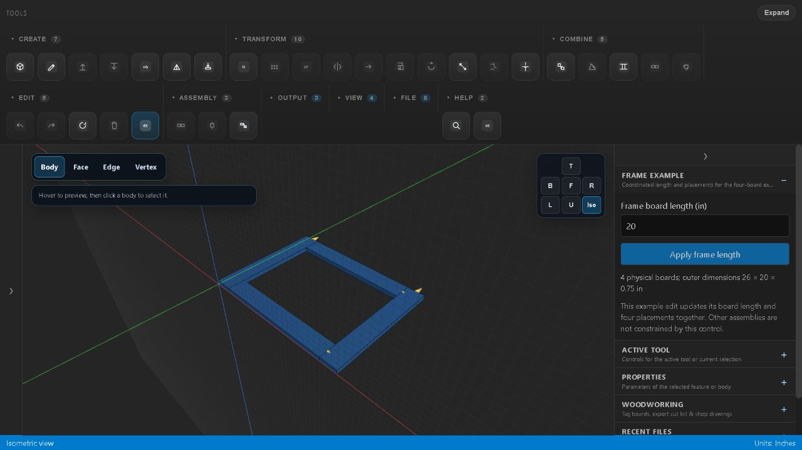
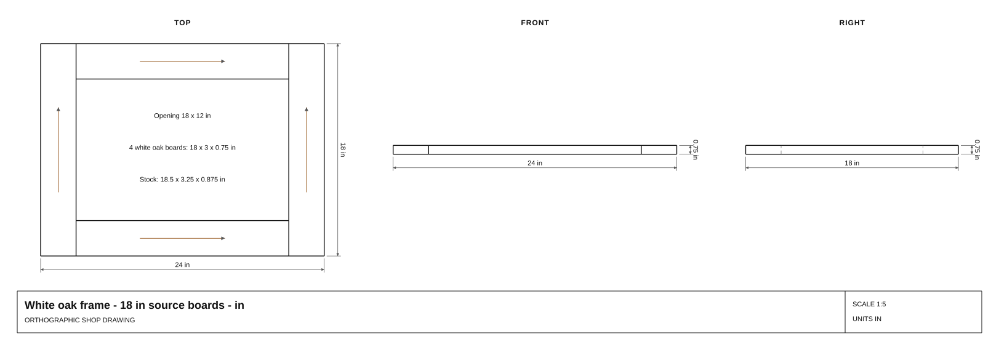

Computational geometry / TypeScript CAD
From an editable frame to real shop drawings.
One source board drives four physical frame instances. Feature history stays editable through rebuilding, save/load, cut lists and dimensional drawing exports.
Parametric Modeller · Browser-tested frame workflow
- physical boards
- 4
- core tests
- 1,171 passed
- drawing formats
- SVG / PDF / DXF
The problem
A useful CAD model must survive an edit without losing its feature history or changing what its manufacturing outputs mean. A component definition supplies geometry; it must not appear as a fifth board in the cut list when four instances make the frame.
My contribution
I built a browser-based woodworking editor around planar B-Rep geometry, parametric features and deterministic rebuilds. The bounded frame example connects the production feature engine, component rebuilder, persistence, measurements, cut-list generator and drawing exporters. Triangles provide the display; feature history supplies the geometry.
Inspect one complete workflow
- Define an 18 × 3 × 0.75 in white-oak board.
- Place four instances into a square-butt frame.
- Set Frame board length to 20 in and apply the coordinated edit.
- Undo and redo, then download and reopen the editable scene.
- Export the four-board cut list and SVG/PDF/DXF shop drawings.


| Measurement | Default 18 in boards | Edited 20 in boards |
|---|---|---|
| Physical parts | 4 | 4 |
| Outer dimensions | 24 × 18 in | 26 × 20 in |
| Opening | 18 × 12 in | 20 × 14 in |
| Material volume | 162 in³ | 180 in³ |
| Cut-list groups / quantity | 1 / 4 | 1 / 4 |
| Save/load geometry and IDs | Preserved | Preserved |
What the checks establish
The final local core run passed 1,171 tests across 143 files, lint, TypeScript and the production build on November 6, 2026. Frame controls check part counts, independent dimensions and volume, stable IDs, save/load, material/grain metadata and actual SVG/PDF/DXF values. Repeated exports of the unchanged reference sample are byte-identical. These core checks are separate from the recorded browser acceptance.
The real browser pass verified the visible length edit, pointer Undo/Redo, selection, rebuild, scene download/import and explicit recovery through Recent files after reload. The downloaded CSV retains all four board names and quantity 4. SVG, decoded PDF content and DXF contain the expected 26, 20 and 0.75 in dimension labels. A rejected 6 in edit and malformed JSON import leave the good frame unchanged. Named views, orbit, fit and reset were checked at desktop widths; mobile and unrelated CAD tools remain unverified.
The edit helper updates both source length and instance placements. That explicit operation is the scope of this example; it does not establish automatic propagation through arbitrary assembly constraints.
Download the actual outputs
Default reference state: editable scene JSON · cut list CSV · SVG drawing · PDF drawing · DXF drawing

Actual browser-edited state: editable scene JSON · cut list CSV · SVG drawing · PDF drawing · DXF drawing

Browser acceptance, measurements and file checksums · Historical November 5 headless receipt
Browser downloads and the screenshot are copied unchanged from the tested production build. The new receipt identifies the published source commit and upstream source/artifact checksums. The earlier headless receipt and reference downloads remain historical records.
Supported scope and remaining limits
- Reload opens an empty editor. Recent files explicitly restores an imported scene while browser local storage is available. Keep the downloaded JSON as the durable copy.
- The example control derives its four placements and manufacturing tags together. Independent per-instance material overrides and arbitrary instance transforms are outside this acceptance. The full legacy browser test suite was not run for this signoff.
- Keep the supported scope planar and prismatic. This square-butt example has no modeled fasteners, joinery or structural rating. Curved CAD and automatic geometry repair are outside this release.